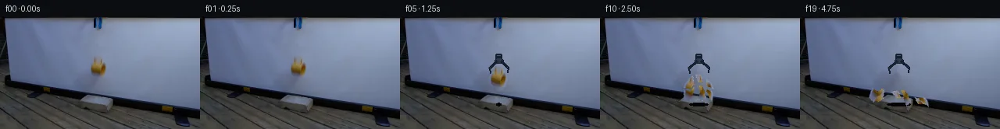

![首帧]()

Round 00
2026-11-05T08:05:09.882349+00:00像素候选变化代码 +271/−0inspection 更新
pixels 85f0deadc16eb67a · code 11892eaa29ae3e9f
查看本轮 generate.py 真实 diff
--- previous/generate.py
+++ current/generate.py
@@ -0,0 +1,271 @@
+#!/usr/bin/env python3
+"""Generate the PixelWorld continuation using only local pixel operations."""
+
+from pathlib import Path
+
+import cv2
+import numpy as np
+from PIL import Image, ImageDraw, ImageFilter
+
+import artifact_io
+
+
+ROOT = Path(__file__).resolve().parent
+W, H = 256, 144
+SRC_BOX = (111, 47, 140, 83) # PIL convention: right/bottom excluded
+
+
+def alpha_composite_rgb(base, overlay):
+ """Alpha-composite a PIL RGBA overlay onto an RGB numpy image."""
+ dst = Image.fromarray(base, "RGB").convert("RGBA")
+ dst.alpha_composite(overlay)
+ return np.asarray(dst.convert("RGB"), dtype=np.uint8)
+
+
+def place_rgba(base, sprite, center, angle=0.0, scale=(1.0, 1.0)):
+ """Rotate/scale an RGBA sprite and composite it around a requested center."""
+ sw = max(1, int(round(sprite.width * scale[0])))
+ sh = max(1, int(round(sprite.height * scale[1])))
+ obj = sprite.resize((sw, sh), Image.Resampling.BICUBIC)
+ if angle:
+ obj = obj.rotate(angle, resample=Image.Resampling.BICUBIC, expand=True)
+ x = int(round(center[0] - obj.width / 2))
+ y = int(round(center[1] - obj.height / 2))
+ layer = Image.new("RGBA", (W, H), (0, 0, 0, 0))
+ layer.alpha_composite(obj, (x, y))
+ return alpha_composite_rgb(base, layer)
+
+
+def make_source_assets(first):
+ """Create a soft mug matte and a locally inpainted clean plate."""
+ matte_l = Image.new("L", (W, H), 0)
+ d = ImageDraw.Draw(matte_l)
+ # Numerically measured silhouette, deliberately kept tight to avoid a box halo.
+ d.polygon(
+ [
+ (120, 49), (129, 49), (132, 55), (135, 58), (137, 65),
+ (136, 72), (133, 77), (131, 80), (127, 82), (120, 81),
+ (116, 78), (114, 73), (114, 65), (116, 59), (118, 56),
+ ],
+ fill=255,
+ )
+ # One-pixel photographic edge rolloff.
+ matte_l = matte_l.filter(ImageFilter.GaussianBlur(0.62))
+ matte = np.asarray(matte_l, dtype=np.uint8)
+
+ hard = (matte > 8).astype(np.uint8) * 255
+ hard = cv2.dilate(hard, np.ones((5, 5), np.uint8), iterations=1)
+ clean = cv2.inpaint(first, hard, 5, cv2.INPAINT_TELEA)
+
+ x0, y0, x1, y1 = SRC_BOX
+ rgb = first[y0:y1, x0:x1]
+ a = matte[y0:y1, x0:x1]
+ rgba = np.dstack([rgb, a])
+ return clean, Image.fromarray(rgba, "RGBA"), matte
+
+
+def draw_grabber(frame, opening):
+ """Render the revealed blue-black gripping head behind the departing mug."""
+ im = Image.fromarray(frame, "RGB").convert("RGBA")
+ dr = ImageDraw.Draw(im, "RGBA")
+ dark = (24, 31, 47, 220)
+ mid = (45, 56, 78, 220)
+ edge = (76, 87, 109, 135)
+ # Short suspended head; most of the shaft lies outside/against the dark upper rig.
+ dr.rounded_rectangle((122, 47, 130, 55), radius=2, fill=dark)
+ dr.line((124, 49, 128, 49), fill=edge, width=1)
+ dr.ellipse((121, 52, 132, 59), fill=mid, outline=dark, width=1)
+ lx, rx = 117 - opening, 135 + opening
+ dr.line((124, 56, lx, 66), fill=dark, width=3)
+ dr.line((129, 56, rx, 65), fill=dark, width=3)
+ dr.line((lx, 65, lx + 1, 72), fill=dark, width=2)
+ dr.line((rx, 64, rx - 1, 71), fill=dark, width=2)
+ dr.point((lx + 1, 65), fill=edge)
+ dr.point((rx - 1, 64), fill=edge)
+ return np.asarray(im.convert("RGB"), dtype=np.uint8)
+
+
… diff truncated; 184 more lines …